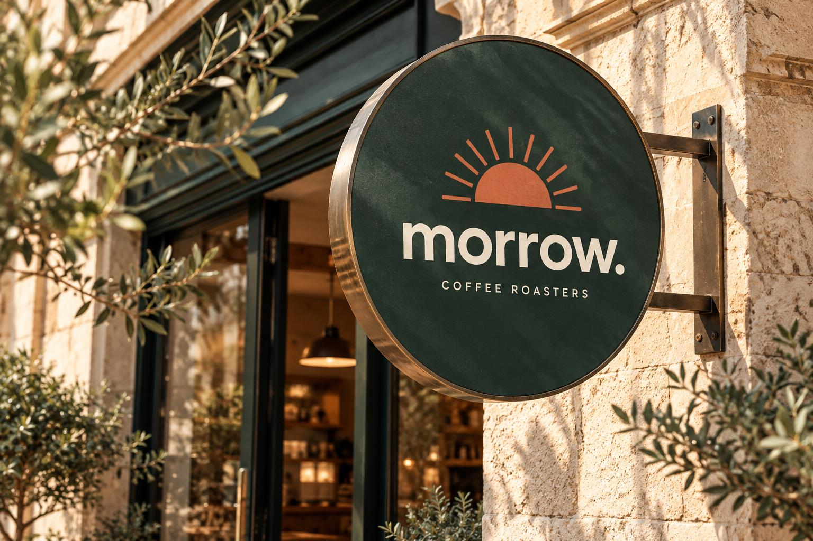

01 / AMBALAJ KİMLİĞİ
Rafta tanınan bir paket.
Ambalajın ön yüzünde güneş işareti, kelime logosu ve ürün bilgisi farklı hiyerarşi katmanlarında yer alır.

Konsept / Ambalaj ön yüzü · düzenlenebilir HTML/CSS maketi
Gündelik kahve molasını daha iyi bir başlangıç ritüeline dönüştüren specialty coffee markası.

01 / Marka ana görseli — ürün ve ambalaj uygulamaları
Bu çalışma gerçek bir müşteri projesi değildir. BARTSS yetkinliklerini sergileyen kurgusal marka tasarımıdır.
Editoryal serif başlık + sade sans-serif destek metinleri.
Tüm uygulamalarda aynı sembol, renk ve tipografik hiyerarşi.
Her uygulamanın tek bir görevi var. Görselleri kalabalık bir panoya sıkıştırmak yerine, ambalajı, mağaza tabelasını ve dijital iletişimi kendi ölçeğinde gösteriyoruz.
Ambalajın ön yüzünde güneş işareti, kelime logosu ve ürün bilgisi farklı hiyerarşi katmanlarında yer alır.
İşaret, kelime logosunun tamamı okunmadan da markayı tanıtacak kadar yalın tutulur.

Kampanya tasarımında marka, slogan ve çağrı birbirinden ayrılır. Görselin içinde yarışan ikinci bir mesaj yoktur.
Güne daha iyi başlayın.
Bu liste benzer bir iş için önerilen teslimat kapsamıdır; konsept kapsamında eksiksiz kaynak dosya seti teslim edildiği iddiası değildir.
Konumlandırmadan ambalaja uzanan markanıza özel tasarım sürecini konuşalım.
Markanız için görüşelim ↗